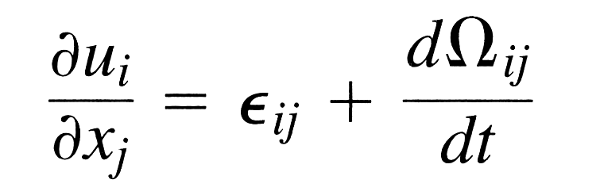
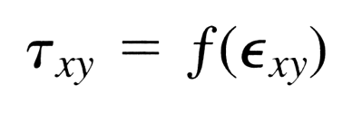
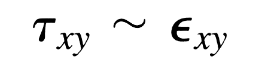
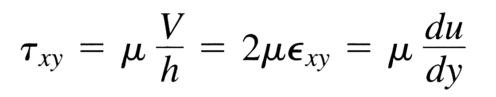
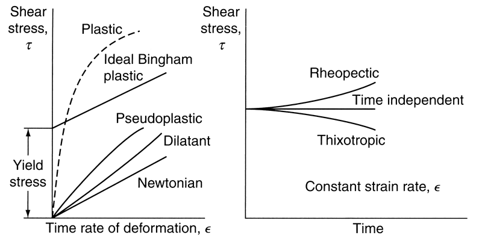

An exploration into viscous fluid flow and an iPad eBook test for Dr. Venkat Raman, Department of Aerospace Engineering in the Cockrell School of Engineering, at The University of Texas at Austin. March 2012.
By comparing Eq. 0-26) with Eqs. (1-13), (1-]4), (1-18), (1-19), and (1-21), we see that Eq. (1-26) can also be written as 
That is, each velocity derivative can be resolved into a strain rate plus an angular velocity. The angular velocity does not distort the element, so that only the strain rate will cause a viscous stress, a fact which is exploited in Chap. 2.
To summarize, we have shown that all the kinematic properties of fluid flow-acceleration, translation, angular velocity, rate of dilatation, and shear-strain rate-are directly related to the fluid velocity vector V = (u, ν, w). These relations are identical to the equivalent expressions from infinitesimal solid mechanics, if (u, ν, w) are instead taken to be components of the displacement vector. This analogy between fluid and solid continuum mechanics is sometimes used to produce the equations of motion of a viscous linear fluid as a direct carryover from the equations of linear (Hookean) elasticity, with which students are often more familiar.
The three so-called transport properties are the coefficients of viscosity, thermal conductivity, and diffusion, so named because of the relation they bear to movement, or transport, of momentum, heat, and mass, respectively. Thus it is now popular in the field of chemical engineering to refer to a viscous-flow study as a problem in momentum transport, giving pause to the casual reader. The idea is not without merit. Each of the three coefficients relates a flux or transport to the gradient of a property. Viscosity relates momentum flux to velocity gradient, thermal conductivity relates heat flux to temperature gradient, and the diffusion coefficient relates mass transport to concentration gradient. Further, the mathematical properties of momentum, heat, and mass-flux problems are often similar and sometimes genuinely analogous. The perfect analogy, when it exists, is so striking that Bird et al. (2001) have devoted an entire textbook to an exposition of analogies among this trinity of problems. We should note now that the analogy fails in multidimensional problems because heat and mass flux are vectors while momentum flux (stress) is a tensor.
The layperson knows from experience what viscosity means and associates it with the ability of a fluid to flow freely. Heavy oil takes a long time to flow out of a can. Light oil flows out quickly. The disastrous Boston molassestank explosion of 1919 [see Shank (1954)] caused one of the slowest floods in history. The idea of viscosity being proportional to time to flow has become accepted practice in the petroleum industry. Thus the motorist purchases oil with a viscosity labeled SAE 30. This means that 60 rn1 of this oil at a specified temperature takes 30 s to run out of a 1.76-cm hole in the bottom of a cup. This experiment is convenient and reproducible for very viscous liquids such as oil, but the time to flow is not viscosity, any more than the speed of sound is the time it takes an echo to return from a mountainside. It is an intriguing fact that the flow of a viscous liquid out of the bottom of a cup is a difficult problem for which no analytic solution exists at present.
FIGURE 1-15: A fluid shear between two plates.
A more fundamental approach to viscosity shows that it is the property of a fluid which relates applied stress to the resulting strain rate. The general relations are considered in Sec. 2-4. Here we consider a simple and widely used example of a fluid sheared between two plates, as in Fig. 1-15. This geometry is such that the shear stress τ xy must be constant throughout the fluid. The motion is in the x direction only and varies with y, u = u(y) only. Thus there is only a single finite strain rate in this flow:
If one performs this experiment, one finds that, for all the common fluids, the applied shear is a unique function of the strain rate:
Since, for a given motion V of the upper plate, τ xy is constant, it follows that in these fluids εxy, and hence duldy, is constant, so that the resulting velocity profile is linear across the plate, as sketched in Fig. 1-15. This is true regardless of the actual form of the functional relationship in Eq. (1-29). If the no-slip condition holds, the velocity profile varies from zero at the lower wall to Vat the upper wall (Prob. 1-16 considers the case of a slip boundary condition). Repeated experiments with various values of τ xy will establish the functional relationship Eq. (1-29). For simple fluids such as water, oils, or gases, the relationship is linear or newtonian:
or
The quantity μ, called the coefficient of viscosity of a newtonian fluid, is what handbooks commonly quote when listing the viscosity of a fluid (see App. A). Actually, there is also a second coefficient, λ, related to bulk fluid expansions, but it is rarely encountered in practice (see Sec. 2-4). Equation (1-30) shows that the dimensions of μ are stress-time: N•s/m2 [or kg/(m•s)] in metric units and lbf•s/ft2 [or slugs/ft•s)] in English units. The conversion factor is
The coefficient μ is a thermodynamic property and varies with temperature and pressure. Data for common fluids are given in App. A.
The coefficient of viscosity of a newtonian fluid is directly related to molecular interactions and thus may be considered a thermodynamic property in the macroscopic sense, varying with temperature and pressure. The theory of the transport properties of gases and liquids is still being developed, and a comprehensive review is given by Hirschfelder et al. (1954). Extensive data on properties of fluids are given by Reid et al. (1987). No single functional relation μ(T, p) really describes
The curve labeled pseudoplastic in Fig. 1-16 is said to be shear-thinning, since its slope (local viscosity) decreases with increasing stress. If the thin- ning effect is very strong, the fluid may be termed plastic, as shown. The opposite case of a shear-thickening fluid is usually called a dilatant fluid, as shown.
Also illustrated in Fig. 1-16 is a material with a finite yield stress, followed by a linear curve at finite strain rate. This idealized material, part solid and part fluid, is called a Bingham plastic and is commonly used in analytic investigations of yielding materials under flow conditions. Yielding substances need not be linear but may show either dilatant or pseudoplastic behavior
No single functional relation μ(T, p) really describes any large class of fluids, but reasonable accuracy (±20 percent) can be achieved by nondimensionalizing the data with respect to the critical point (Tc, Pc). This procedure is the so-called principle of corresponding states [Keenan (1941)], wherein the given property, here μ/ μe, is found to be roughly a function of T/Tc and PilΡc, the reduced temperature and pressure. This principle is not justified on thermodynamic grounds but arises simply from dimensional analysis and experimental observation. Since changes occur very rapidly near the critical point, Tc and Pc are known only approximately, and it is essentially impossible to measure μc accurately. Appendix A contains a table of critical constants (Tc, Pc, μc, kc) for common fluids, which should be regarded as best-fit values.
This principle is not justified on thermodynamic grounds but arises simply from dimensional analysis and experimental observation. Since changes occur very rapidly near the critical point, Tc and Pc are known only approxi- mately, and it is essentially impossible to measure µc accurately. Appendix A contains a table of critical constants (Tc, Pc, µc, kc) for common fluids, which should be regarded as best-fit values.
Figure 1-17 shows a recommended correlation of reduced viscosity μ/ μc vs. reduced temperature T/Tc and reduced pressure p/Pc' As stated, the accuracy for any given fluid is about ±20 percent. By examining this figure, we can make the following general statements:
Since Pc for most fluids is greater than 10 atm (App. A), typical gas flow problems are at low reduced pressure and approximate the low-densitylimit curve of Fig. 1-17.